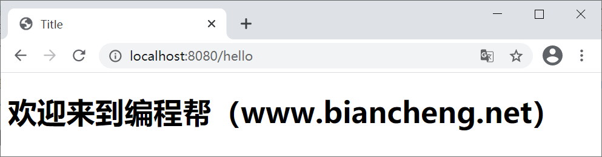

Spring Boot整合Thymeleaf
Spring Boot 推荐使用 Thymeleaf 作为其模板引擎。SpringBoot 为 Thymeleaf 提供了一系列默认配置，项目中一但导入了 Thymeleaf 的依赖，相对应的自动配置 （ThymeleafAutoConfiguration） 就会自动生效，因此 Thymeleaf 可以与 Spring Boot 完美整合 。
Spring Boot 整合 Thymeleaf 模板引擎，需要以下步骤：
ThymeleafAutoConfiguration 使用 @EnableConfigurationProperties 注解导入了 ThymeleafProperties 类，该类包含了与 Thymeleaf 相关的自动配置属性，其部分源码如下。
ThymeleafProperties 通过 @ConfigurationProperties 注解将配置文件（application.properties/yml） 中前缀为 spring.thymeleaf 的配置和这个类中的属性绑定。
在 ThymeleafProperties 中还提供了以下静态变量：
根据以上配置属性可知，Thymeleaf 模板的默认位置在 resources/templates 目录下，默认的后缀是 html，即只要将 HTML 页面放在“classpath:/templates/”下，Thymeleaf 就能自动进行渲染。
2. 新建一个控制类 HelloController，并通过参数 map 传递数据到前台页面中，代码如下。
3. 启动 Spring Boot，使用浏览器访问“http://localhost:8080/hello”，结果如下图。
Spring Boot 整合 Thymeleaf 模板引擎，需要以下步骤：
- 引入 Starter 依赖
- 创建模板文件，并放在在指定目录下
引入依赖
Spring Boot 整合 Thymeleaf 的第一步，就是在项目的 pom.xml 中添加 Thymeleaf 的 Starter 依赖，代码如下。
<!--Thymeleaf 启动器-->
<dependency>
<groupId>org.springframework.boot</groupId>
<artifactId>spring-boot-starter-thymeleaf</artifactId>
</dependency>
创建模板文件
Spring Boot 通过 ThymeleafAutoConfiguration 自动配置类对 Thymeleaf 提供了一整套的自动化配置方案，该自动配置类的部分源码如下。
@Configuration(
proxyBeanMethods = false
)
@EnableConfigurationProperties({ThymeleafProperties.class})
@ConditionalOnClass({TemplateMode.class, SpringTemplateEngine.class})
@AutoConfigureAfter({WebMvcAutoConfiguration.class, WebFluxAutoConfiguration.class})
public class ThymeleafAutoConfiguration {
}
ThymeleafAutoConfiguration 使用 @EnableConfigurationProperties 注解导入了 ThymeleafProperties 类，该类包含了与 Thymeleaf 相关的自动配置属性，其部分源码如下。
@ConfigurationProperties(
prefix = "spring.thymeleaf"
)
public class ThymeleafProperties {
private static final Charset DEFAULT_ENCODING;
public static final String DEFAULT_PREFIX = "classpath:/templates/";
public static final String DEFAULT_SUFFIX = ".html";
private boolean checkTemplate = true;
private boolean checkTemplateLocation = true;
private String prefix = "classpath:/templates/";
private String suffix = ".html";
private String mode = "HTML";
private Charset encoding;
private boolean cache;
...
}
ThymeleafProperties 通过 @ConfigurationProperties 注解将配置文件（application.properties/yml） 中前缀为 spring.thymeleaf 的配置和这个类中的属性绑定。
在 ThymeleafProperties 中还提供了以下静态变量：
- DEFAULT_ENCODING：默认编码格式
- DEFAULT_PREFIX：视图解析器的前缀
- DEFAULT_SUFFIX：视图解析器的后缀
根据以上配置属性可知，Thymeleaf 模板的默认位置在 resources/templates 目录下，默认的后缀是 html，即只要将 HTML 页面放在“classpath:/templates/”下，Thymeleaf 就能自动进行渲染。
与 Spring Boot 其他自定义配置一样，我们可以在 application.properties/yml 中修改以 spring.thymeleaf 开始的属性，以实现修改 Spring Boot 对 Thymeleaf 的自动配置的目的。
示例
1. 创建一个名为 hello.html 的页面，并将该页面放在项目类路径（resources）下的 templates 目录中，hello.html 代码如下。
<!DOCTYPE html>
<!--导入thymeleaf的名称空间-->
<html lang="en" xmlns:th="http://www.thymeleaf.org">
<head>
<meta charset="UTF-8">
<title>Title</title>
</head>
<body>
<!--th:text 为 Thymeleaf 属性，用于获取指定属性的值-->
<h1 th:text="'欢迎来到'+${name}"></h1>
</body>
</html>
2. 新建一个控制类 HelloController，并通过参数 map 传递数据到前台页面中，代码如下。
package net.biancheng.www.controller;
import org.springframework.stereotype.Controller;
import org.springframework.web.bind.annotation.RequestMapping;
import java.util.Map;
@Controller
public class HelloController {
@RequestMapping("/hello")
public String hello(Map<String, Object> map) {
//通过 map 向前台页面传递数据
map.put("name", "编程帮（www.biancheng.net）");
return "hello";
}
}
3. 启动 Spring Boot，使用浏览器访问“http://localhost:8080/hello”，结果如下图。

图1：Thymleaf 整合
图1：Thymleaf 整合
关注公众号「站长严长生」，在手机上阅读所有教程，随时随地都能学习。内含一款搜索神器，免费下载全网书籍和视频。

微信扫码关注公众号